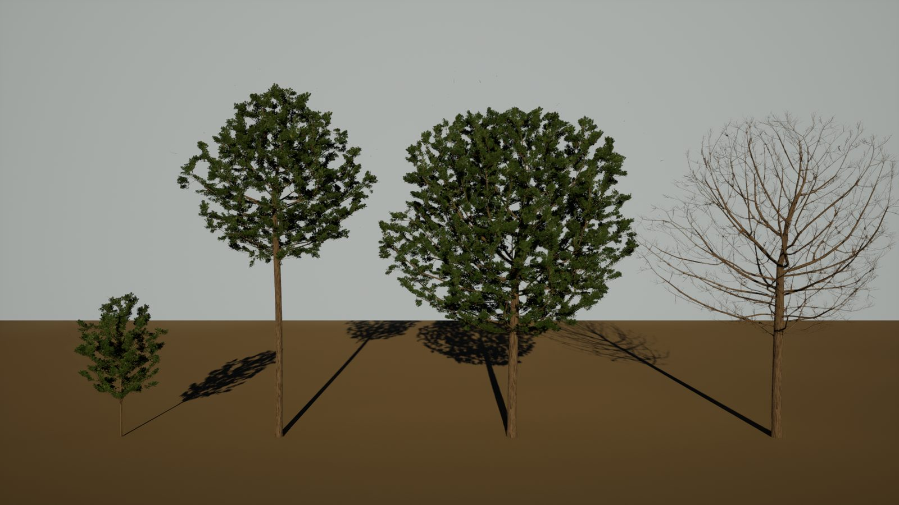
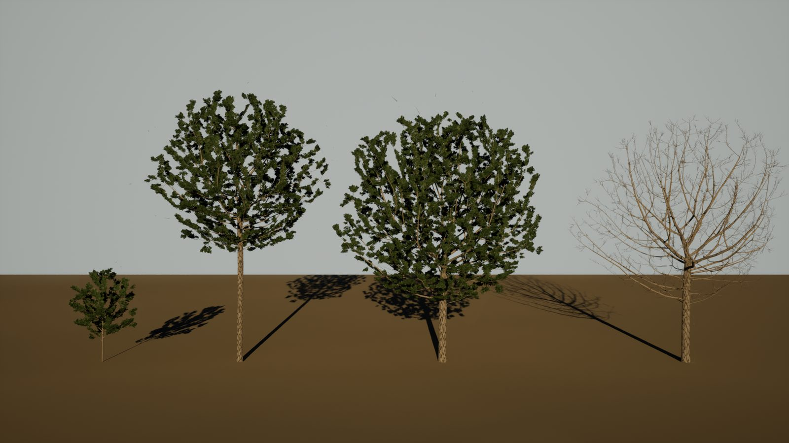
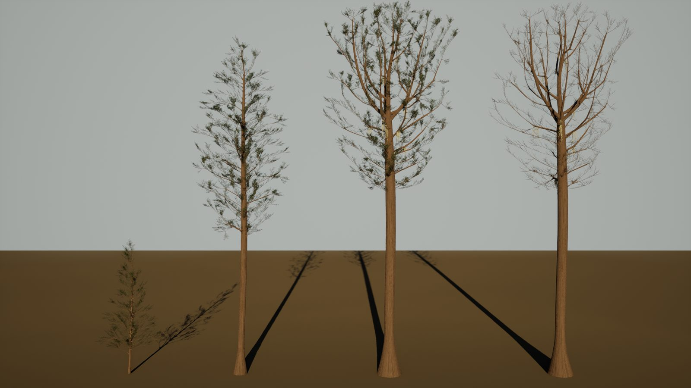
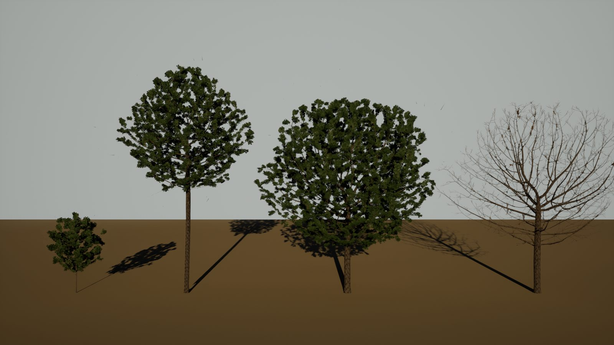
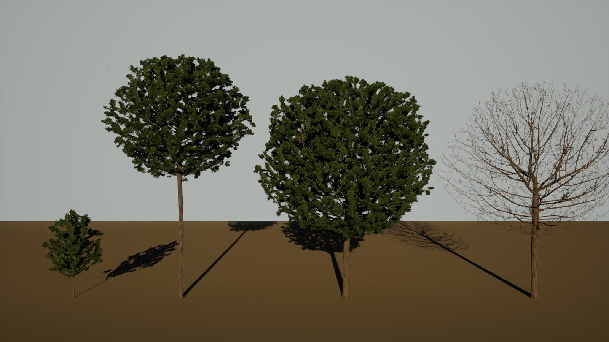
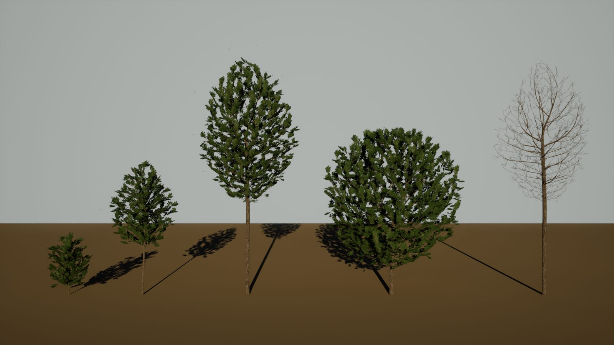

Lab now
The factory, live
Three import lanes and one render lane. The page rebuilds every half hour and when a species lands.
Importing
Lane 1Southern magnoliasince 16:16:52
Lane 2American sycamoresince 16:08:51
Lane 3Scarlet oaksince 16:14:37
GPU: rendering a lineup or test
Waiting for a lineup
- Water tupelo
- Live oak
- Sugar maple
- Eastern redbud
- Eastern redbud
- Chinese tallow
- Chinese tallow
- Red spruce
- Yellow birch
- Chinaberry
Next
- Crape myrtle
- Flowering dogwood
- Callery pear
- Pecan
- Winged elm
- American holly
- Post oak
- Cherrybark oak
- Swamp chestnut oak
- Loblolly-bay
- Black willow
- River birch
+ 23 more
Latest lineups
Fresh from the render lane








